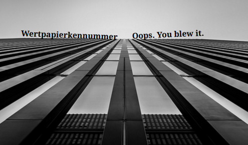

Design a Band Challenge
Challenge Information
--Design Thinking is a process for coming up with ideas for something creative for a large group of people. We’ve decided to do this for an assignment is because we, as individuals, can connect to other people’s ideas and so we can cooperate with other people.
-- The steps needed for this project were to be able to cooperate with people and try our best give them what they want.
-- The steps for this project were not too complicated But were, in a way, complicated. Our First step was to come up with a band name using the Wikipedia random search. Whatever came up for the article, we would use the title for our band name. Next, We use the same Wikipedia concept, but with random quotes. What came up would be our album name. Lastly, we had to look for a photo on Flickr, using the prefernces of what the people wanted so it would appeal to them
Album Cover
Context for the band:
In our highschool years, My friend and I were listening to our music, when out of nowhere, he says, “DUDE! We can start a band!” I was honestly surprised because I have never touched an instrument before and I had no idea what I would’ve been good with, but my friend was proficient with the drums. A few months later, I took some classes for the guitar and after some of those classes, I was convinced that I was going to stick to playing the guitar. I got the rest of my friends to finish the entire band. It was me and my friends Angel, Luke, and Jimmy. Once we got together, we had to find out what genres we wanted to play. At the end of the day, we decided on Ska Punk. We were HORRIBLE at our first practice, but at least no one else was there to listen to us play. Our main concern at that time was choosing a band name. We had no clue what to come up with for our band name. Jimmy later comes up with the idea of using a long German word, just to be funny. Sadly, we stuck withh it...